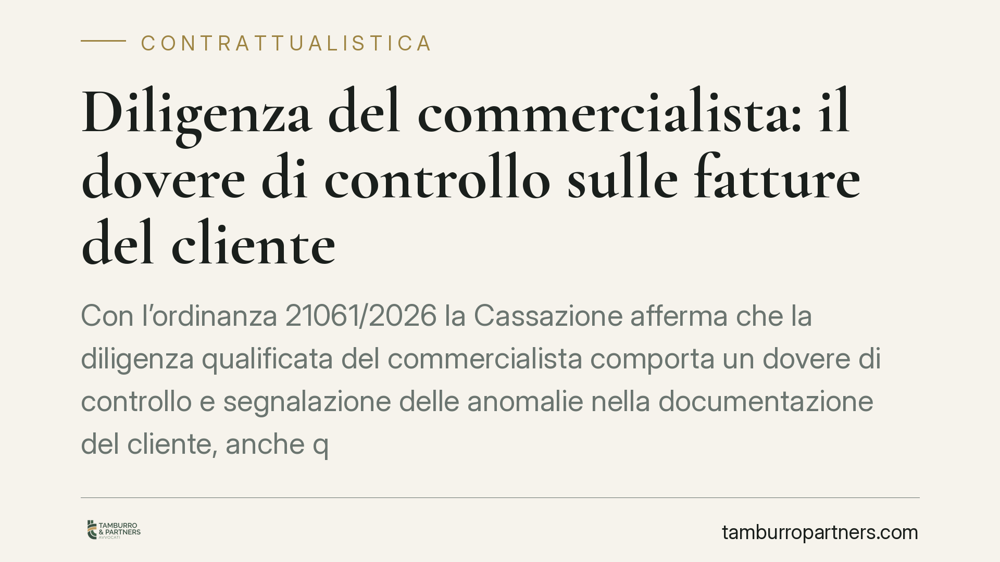

Diligenza del commercialista: il dovere di controllo sulle fatture del cliente
Con l'ordinanza 21061/2026 la Cassazione afferma che la diligenza qualificata del commercialista comporta un dovere di controllo e segnalazione delle anomalie nella documentazione del cliente, anche quando la fatturazione è curata direttamente da quest'ultimo. Una lettura estensiva dell'art. 1176 che ha generato forti reazioni nelle associazioni di categoria e ridisegna il perimetro della responsabilità professionale.

Il caso e la decisione
La Corte di Cassazione è tornata sul tema della responsabilità del professionista contabile con un'ordinanza destinata a far discutere. Il nodo è semplice nella formulazione ma complesso nelle conseguenze: fino a che punto il commercialista è tenuto a verificare la documentazione fiscale che il cliente produce autonomamente?
Secondo i giudici, l'incarico professionale non si esaurisce nella mera registrazione di quanto ricevuto. La diligenza richiesta al commercialista include un dovere di controllo e di segnalazione delle anomalie evidenti nella documentazione, anche quando la fatturazione è materialmente gestita dal cliente. Il professionista, in altre parole, non può limitarsi a recepire passivamente i dati.
Inquadramento normativo
Il riferimento è l'art. 1176, comma 2, del codice civile, che impone al prestatore d'opera intellettuale una diligenza valutata "con riguardo alla natura dell'attività esercitata". È la cosiddetta *diligenza qualificata*: non quella dell'uomo medio, ma quella del professionista competente in quel settore.
La Cassazione applica questo parametro in senso espansivo. La competenza tecnica del commercialista — la sua capacità di riconoscere uno scostamento, un'incongruenza, un dato che non quadra — genera un'aspettativa di controllo. Se l'anomalia è percepibile da un professionista diligente, il mancato rilievo può integrare un inadempimento contrattuale, con conseguente responsabilità risarcitoria.
Il punto delicato riguarda il confine. L'ordinanza non impone al commercialista di sostituirsi al cliente né di svolgere attività investigative. Il dovere di controllo scatta sulle anomalie riconoscibili con l'ordinaria perizia professionale, non su quelle occulte o dolosamente dissimulate.
Le reazioni delle categorie
Le principali associazioni di categoria — tra cui ADC, Ungdcec, Aidc, ANC e Confprofessioni — hanno espresso preoccupazione. Il timore è che una lettura troppo ampia del dovere di controllo trasformi il commercialista in garante dell'operato del cliente, con un ampliamento della responsabilità difficilmente sostenibile sul piano operativo e assicurativo.
La questione tocca un equilibrio concreto: distinguere il controllo di coerenza, che rientra nella prestazione professionale, dalla verifica sostanziale di ogni singola operazione del cliente, che eccede l'incarico tipico.
Implicazioni pratiche
Per il commercialista — e più in generale per chi gestisce incarichi di assistenza contabile e fiscale — la pronuncia ha ricadute immediate.
In primo luogo, cresce il peso della fase di verifica. La semplice ricezione dei documenti non basta più a dimostrare la correttezza dell'operato. Diventa rilevante poter provare di aver esaminato la documentazione e di aver segnalato le incongruenze.
In secondo luogo, assume centralità la tracciabilità delle segnalazioni. Una comunicazione scritta al cliente che rileva un'anomalia e invita a chiarirla può costituire la differenza tra adempimento e responsabilità.
In terzo luogo, il contratto d'incarico diventa lo strumento principale per definire i confini della prestazione. Clausole chiare su cosa il professionista controlla e cosa resta nella sfera del cliente aiutano a delimitare il perimetro della responsabilità, pur senza poter escludere i doveri minimi imposti dall'art. 1176.
Cosa fare in concreto
- Rivedi i mandati professionali: specifica per iscritto l'oggetto dell'incarico, le attività comprese e quelle escluse, distinguendo controllo di coerenza e verifica sostanziale.
- Documenta le segnalazioni: ogni anomalia rilevata va comunicata al cliente per iscritto, con data certa, conservando la prova dell'invio.
- Struttura una procedura di controllo: definisci criteri minimi di verifica della documentazione ricevuta, così da poter dimostrare la diligenza applicata.
- Verifica la copertura assicurativa: valuta con l'intermediario se la polizza professionale risponde all'orientamento emergente e, se necessario, aggiornala.
- Forma lo studio: allinea collaboratori e personale sul nuovo standard di diligenza, perché la responsabilità contrattuale ricade sul professionista titolare dell'incarico.
La pronuncia non impone l'impossibile, ma alza l'asticella della prestazione attesa. Chi documenta i propri controlli e definisce con precisione il proprio mandato riduce in modo significativo l'esposizione a contestazioni.
---
*Contributo informativo a cura di Tamburro & Partners - Avv. Giuseppe Tamburro. Non costituisce parere legale.*
Ogni contratto ha il suo equilibrio.
Se vuoi una revisione delle clausole o una redazione su misura, scrivi allo studio. Ti rispondiamo entro un giorno lavorativo.